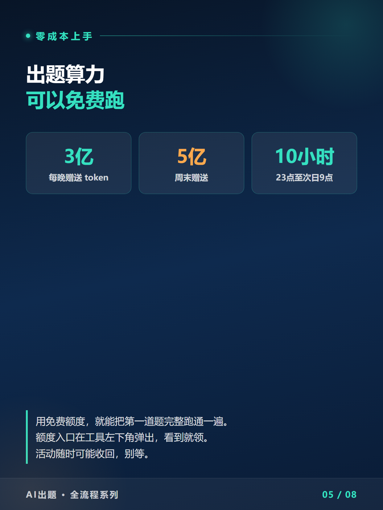
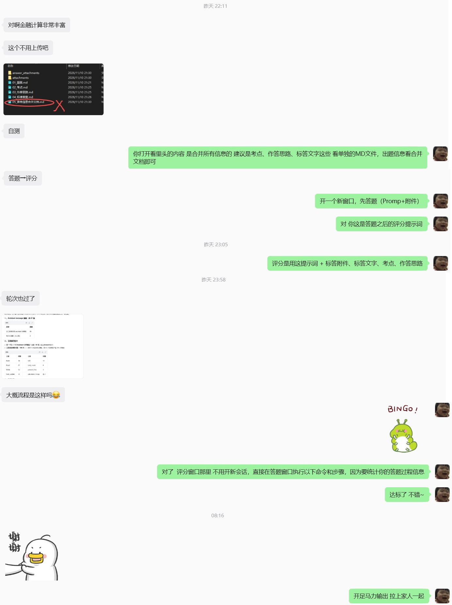
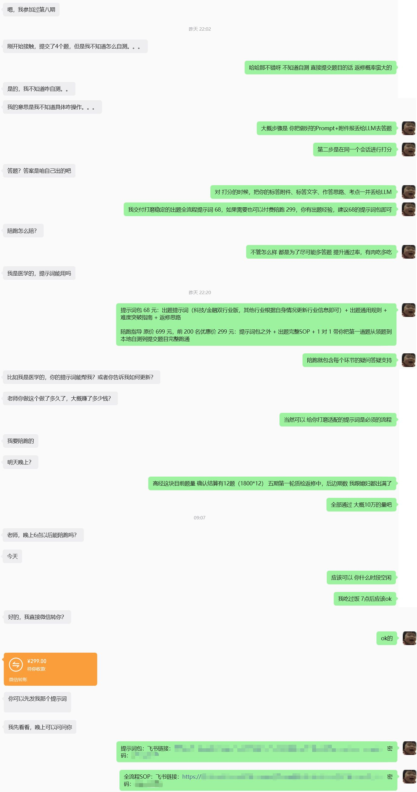
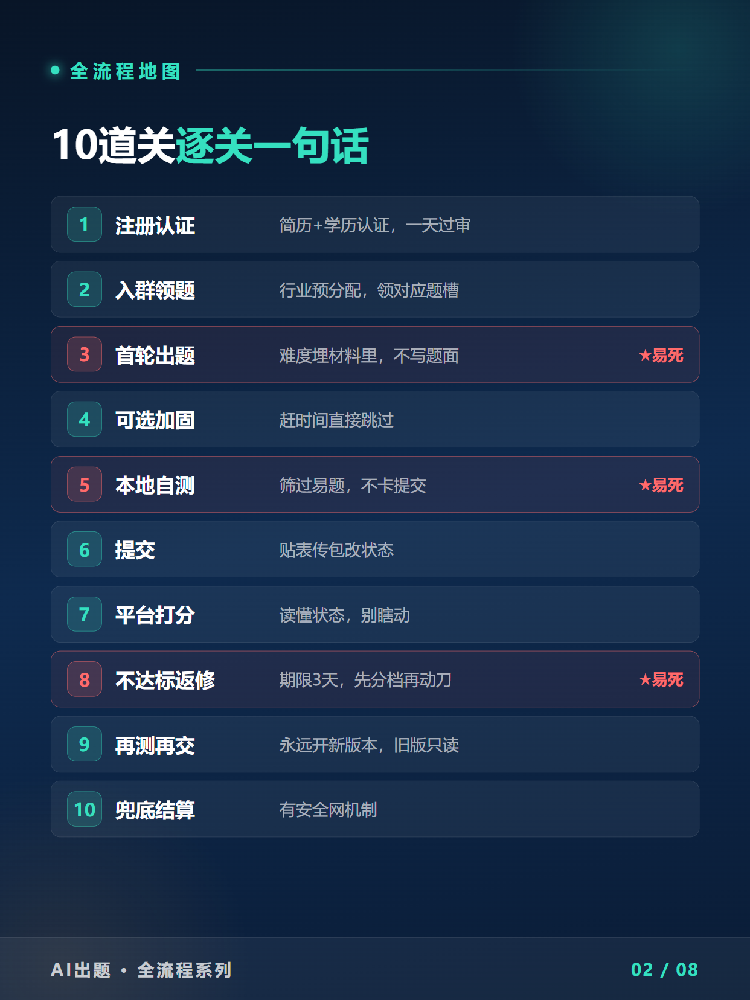
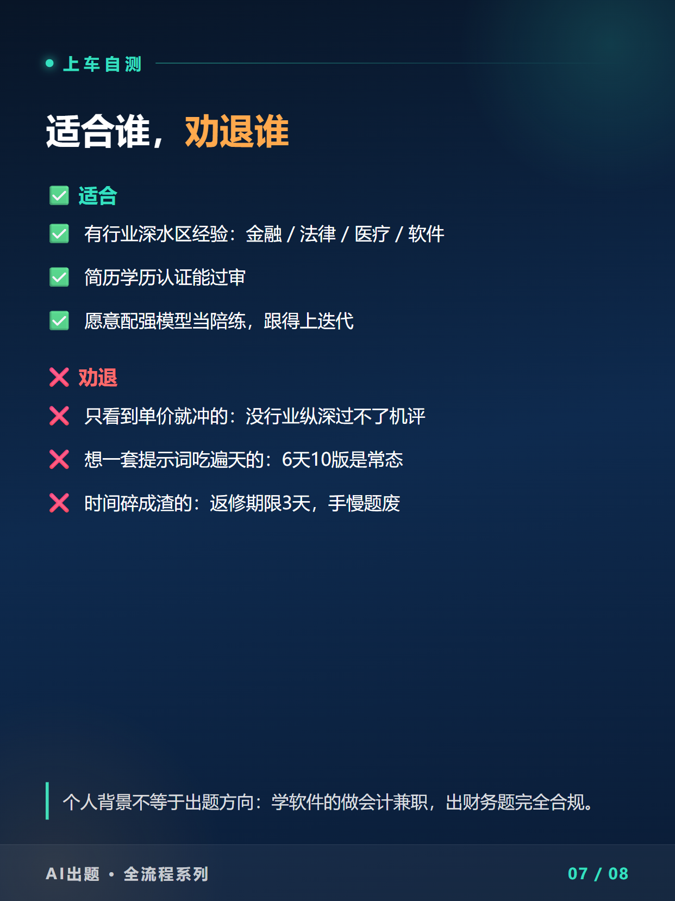

① 点右上角「复制到公众号」 → ② 微信公众号编辑器 Ctrl/⌘+V 粘贴。若图片未带入，改用 Ctrl/⌘+A 全选本页正文再复制；仍不行就用同目录「_含图_自包含.html」。
出题任务，这期没赶上等下期？
字节刚发通知：9期11.16截止
10期时间待定
11.16截止 · 收题远超预期 · 项目预计做到12月
AI启蒙学习 · XPERT实战
📦 4 Parts + Conclusion
👉 滑动
PART 01
通知翻译
三条原文说人话
PART 02
首日交付
68·299·自测达标
PART 03
补课导航
前三篇按顺序翻
PART 04
两档选择
68还是299
PART ///
写在最后
上车三步
字节高经出题，系列第四篇。这篇短，因为事情就一句话：9期已经开了，11月16日晚截止，10期可能不开——这个项目预计可以做到12月份。
— 9期截止与管线官方通知要点卡（依据11.13群通知整理）
通知原文三条，原样搬给你：
9期截止时间定了：11月16日 23:59:59 截止收题，10期开始时间待定——官方提醒早一点填表，避免最后一小时集中提交；
管线全在跑：四期结算确认表开始陆续发放（先发一部分，长尾在处理）；6期返修预计下周开跑（也可能是本周末），7期紧随其后，5期未返修的后面单独安排；
收题速度远超预期、任务目标提前达成——但10期什么时候开，官方口径是「时间待定」。
01
PART
这条通知，翻译一下
THE NOTICE · TRANSLATED
第一 · 缺的从来不是名额，是能过线的题
收题快到目标提前达成，说明需求端没吃饱的是质量。这对能出好题的人是好消息：你交的每一道合格题，都不缺买家。
第二 · 10期「待定」要按暂缓来准备
前几期的节奏是这期结束、下一期马上接上，这次官方口径变成了「开始时间待定」。好消息是项目预计可以做到12月份——但窗口逻辑还是变了：以前是「这期没赶上等下期」，现在下一班什么时候来，没人说得准。
第三 · 白嫖算力窗口还开着
智谱ZCode和混元WBhy4的免费额度还在领：每晚3亿token、周末5亿，23点到次日9点生效。免费额度足够把第一道题从领题跑到提交。两个窗口叠在一起——9期窗口到11月16日晚，算力窗口官方原话是「活动随时可能调整」。

— 免费额度口径（随时可能调整，看到就要领）
02
PART
首日交付现场
DAY-ONE PROOF
资料包放出去之后，交付一直在发生。9期开启当天上午到现在，又落了两单，还有位客户拿提示词包跑的第一道题，本地自测已经达标：
— 9期开启当天成交的68单（链接密码已打码）

— 客户拿提示词包跑第一道题，本地自测达标的结果反馈

— 第二单299陪跑，从领题开始1对1带跑
— 买过科技版的客户回来问其他行业：复购是资料包最好的背书
买家画像和第3篇写的一样准：有平台上出题被卡的老手，拿包对着卡点直接改；有踩着窗口进来的新人；也有不啰嗦直接上陪跑的。窗口期大家问的问题都长一样——不是「能不能做」，是「明天出题来得及吗」。
03
PART
上车前，把这三篇翻完
CATCH-UP GUIDE
这套东西不是三分钟热度，是两个多月、四期任务攒下来的。按顺序补课：
第1篇 · 心得
《众测落袋16400、出题管线8万+》：这个平台是什么、有哪些任务、钱从哪来。【链接】
第2篇 · 战报
《国庆两个半小时折算1.6万》：16题一次过6题的实战复盘，时薪5000的结构在哪。【链接】
第3篇 · 全流程
《从注册到结算，10步SOP》：10道关每关考什么、哪几关最容易死。【链接】

— 10道关完整地图（第3篇正文有每一关的拆解）
04
PART
两档，怎么选
PICK YOUR TIER
提示词包 · 68元
出题提示词（科技/金融/医药/教育四行业版，其他行业可根据通用包自行更新）+ 出题通用规则 + 难度突破指南 + 返修思路。国庆那次16题省掉加固直接交、一次过6题，赌的就是这套底牌。
陪跑 · 原价699，前200名299
提示词包之外，加出题完整SOP（从注册认证到结算提现，10道关每一步带界面截图），再送1对1——带你把第一道题从领题、本地自测到提交完整跑通。
照例劝退三秒：没行业纵深（金融/法律/医疗/软件等）的，难度分过不了机评；不想迭代提示词的，时间碎成渣的，返修3天的期限手慢题废。

— 适合谁、劝退谁（第3篇「泼冷水」一节有完整版）
///
LAST
写在最后：怎么上车
GET ON BOARD
公众号后台发「高经」两个字与我联系；
加微备注「高经」，拉你进群——群内同步每期任务通知+提示词更新解读+出题技巧，9期的领题节奏群里实时对表；
进群后再决定68还是299，都来得及；想先注册平台试水的，用我的邀请码：
— 我的Xpert邀请码（发布前核对有效期）
9期11月16日23:59:59截止。如果10期真暂缓，先上车的人吃肉，后上车的喝汤，最后来的刷碗。
如果10期真暂缓——
这一班，可能就是最近最后一班
群里见。
我是艾启蒙，用AI陪伴成长，用技术创造价值！这个系列的战报，会一直更下去。
既然看到这里了，如果觉得有用，随手点个赞、在看、转发三连吧。
THANKS FOR READING